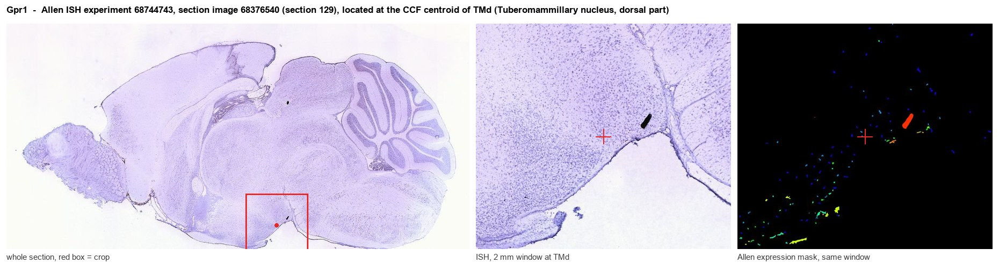
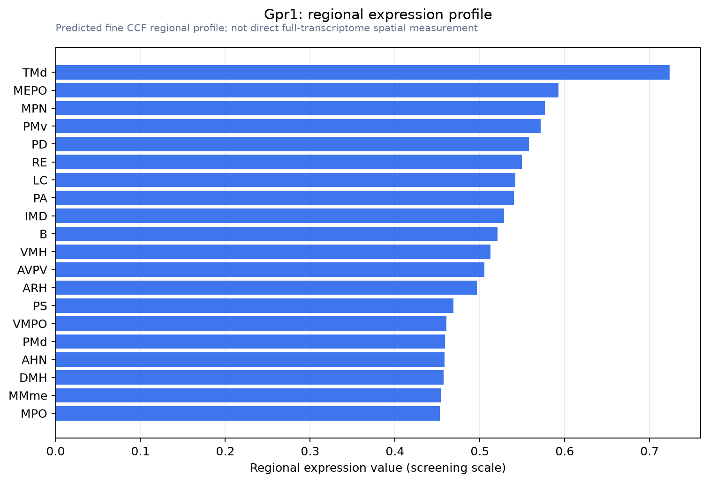

Gpr1
Chemerin-like receptor 2 (Chemerin chemokine-like receptor 2) (Chemokine-like receptor 2) (G protein-coupled receptor 1)
Spatial tier: REGION_BIASED · Class: GPCR · Top region: TMd (Tuberomammillary nucleus, dorsal part) · Positive regions: 45/554
Function in TMd: evidence, prediction, innovation
- Gene function
- GPR1 (chemerin receptor 2, CMKLR2) is a class A G protein-coupled receptor for the adipokine chemerin. Compared with the related CMKLR1 it signals weakly through G proteins and mainly recruits beta-arrestin, so it behaves partly as a scavenger/atypical receptor; in mice it influences glucose homeostasis under obesity.
- Region function
- The dorsal tuberomammillary nucleus contains the brain's only histaminergic neurons; they project diffusely to cortex, thalamus and hypothalamus and promote wakefulness, arousal and attention, and they are the target of sedating antihistamines.
- Published in this region
- none No region-specific literature found. The closest evidence is metabolic rather than regional: Rourke 2014 showed Gpr1 is an active chemerin receptor that affects glucose homeostasis in obese mice, and Kennedy 2018 catalogued its atypical, beta-arrestin-biased pharmacology; no study has examined chemerin signalling in histaminergic neurons.
- Predicted function
- Prediction: GPR1 on tuberomammillary histaminergic neurons would let the adipokine chemerin, which rises with obesity and inflammation, act directly on the brain's wake-promoting histamine system, providing a molecular route from metabolic state to arousal and from obesity to sleep fragmentation. Chemerin applied to TMN slices should modulate histaminergic firing through beta-arrestin-dependent receptor trafficking; Gpr1 knockout or TMN-restricted knockdown is predicted to blunt diet-induced changes in wakefulness and to alter histamine-dependent arousal responses in obese mice.
- Innovation
- ★★★★★ 5/5 An adipokine receptor on the sole histaminergic nucleus is a clean metabolism-to-arousal hypothesis that has never been tested.
- Tools
- Gpr1 knockout mice; chemerin and chemerin-9 peptide agonists; CMKLR1 antagonist alpha-NETA as pathway control; anti-GPR1 antibodies; histaminergic targeting with Hdc-Cre mice.
- References
Direct evidence located at the region

Allen ISH experiment 68744743, section image 68376540 (section 129): the section that contains the CCF centroid of Tuberomammillary nucleus, dorsal part according to the Allen image-to-atlas alignment (reference_to_image), with a 2 mm window around that point. Left: whole section, red box = window. Middle: ISH signal. Right: Allen's expression-mask view of the same window. open this image in the Allen viewer
Direct spatial evidence

Regional expression figure

Predicted WMB × fine-CCF profile; not direct full-transcriptome spatial measurement.
Spatial profile
Evidence and specificity
- Evidence status
- PREDICTED_FINE
- Direct sources
- None; predicted localization only
- Exclusive threshold
- 12 positive regions out of 554
- Spatial specificity
- 0.294
- Top-region fraction
- 0.040
- Filter status
- PASS
Interpretation limits
- Cell-type-to-region projection is imputed expression, not direct spatial measurement.
- Adult reference atlases do not establish stability across age, sex, strain, state, or disease.
- Transcript abundance does not guarantee protein abundance or genetic-tool performance.